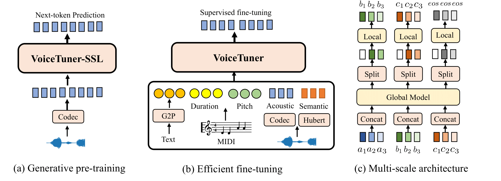

Abstract. Voice large language models (LLMs) cast voice synthesis as a language modeling task in a discrete space, and have demonstrated significant progress to date. Despite the recent success, the current development of voice LLMs in low-resource applications is hampered by data scarcity and high computational cost. In this work, we propose VoiceTuner, with a self-supervised pre-training and efficient fine-tuning approach for low-resource voice generation. Specifically, 1) to mitigate data scarcity, we leverage large-scale unlabeled dataset and pre-train VoiceTuner-SSL without pre-defined applications, which can be fine-tuned in downstream tasks; 2) to further reduce the high training cost in complete fine-tuning, we introduce a multiscale adapter to effectively update around only 1% parameters as a plug-and-play module; and 3) to alleviate the challenges of modeling long audio tokens inherited from inefficient attention mechanism, we introduce VoiceTuner-Mamba with multiscale state space models in place of transformers. Experimental results demonstrate that VoiceTuner-SSL presents strong acoustic continuations. VoiceTuner exhibits superior quality and style similarity in three low-resource (1h, 10h, 30h) generation tasks. Audio samples are available at https://VoiceTuner.github.io .

In this section, we provide samples of audio continuation generation of VoiceTuner-SSL, including its ability to maintain speed, style, emotion and noisy environment.
| Speed | Prefix | Base | Medium | Large |
|---|---|---|---|---|
| slow | ||||
| slow | ||||
| normal | ||||
| fast | ||||
| fast |
| Style | Prefix | Base | Medium | Large |
|---|---|---|---|---|
| whispering | ||||
| angry | ||||
| excited | ||||
| newscast formal | ||||
| shouting |
| Emotion | Prefix | Base | Medium | Large |
|---|---|---|---|---|
| angry | ||||
| sad | ||||
| surprise |
| Prefix | Base | Medium | Large |
|---|---|---|---|
In this section, we provide the results of VoiceTuner on low-resource finetuning tasks, including instruction-guided tts, zero-shot tts and singing voice synthesis.
| Text | Instruction | GT | GT Voc. | 30h full-p | 30h adapter | 30h full-s | 10h full-p | 10h adapter | 1h full-p | 1h adapter |
|---|---|---|---|---|---|---|---|---|---|---|
| As soon as we left Liverpool Street she produced a bag of shrimps, grasped each individual in turn firmly by the head and tail, and ate him. | Please generate a slow speaking female voice. | |||||||||
| If you had taken another step, peter Rabbit, you would have stepped right on our eggs. | Please help me generate a male voice with high tone and fast speaking speed. | |||||||||
| In international affairs we are a short sighted people. | High pitched, normal speaking speed, low volume, man. | |||||||||
| Now he wanted to join forces with his own kind, whether those men were potential enemies or not. | Talk with her unique bass. | |||||||||
| Wonder where Jill was-Jill Bayne, Fayne, Sayne-what the devil-neck hurts, darned uncomfortable seat. | This woman whispered, her voice was shrilly. |
| Text | GT | GT Voc. | 30h full-p | 30h adapter | 10h full-p | 10h adapter | 1h full-p | 1h adapter |
|---|---|---|---|---|---|---|---|---|
| No candle was burning in the caravan, probably from the economy of want. The hut was lighted only by a red tinge, arising from the opening at the top of the stove, in which sparkled a peat fire. | ||||||||
| Having lost in his old age the intellect he had never possessed in his youth, was not responsible for the calamities of his reign. | ||||||||
| He approached the great mansion. | ||||||||
| Behind, projecting hinges indicated a door, and in the centre of this door a square opening showed a light inside the caravan. | ||||||||
| In those two houses neither candle nor lamp was to be seen; nor in the whole street; nor in the whole town, so far as eye could reach. |
| Text | GT | GT Voc. | 30h full-p | 30h adapter | 10h full-p | 10h adapter |
|---|---|---|---|---|---|---|
| 不用抉择我会自动变朋友 | ||||||
| 就甜蜜地忍耐繁星润湿窗台 | ||||||
| 熟悉的那一条街 | ||||||
| 最好在下一秒 | ||||||
| 骤雨落宿命敲 |